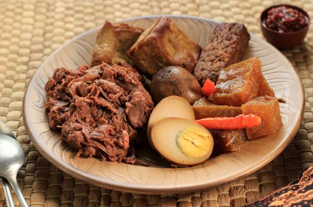
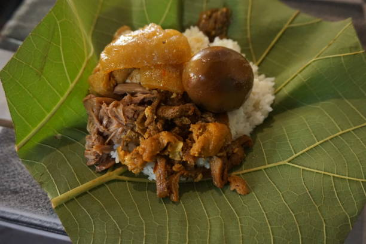
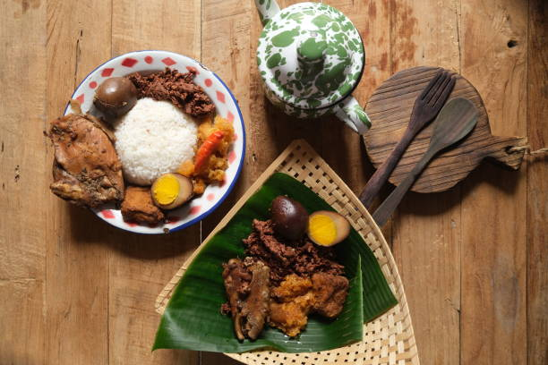

Sejarah

Sejarah Gudeg Asal Jogja Dikutip dari buku Makanan Tradisional
Indonesia Seri 2 karya Murdijati Gardjito dkk, gudeg konon sudah ada
sejak zaman Kerajaan Mataram Islam. Ini bermula dari pembabatan Alas
Mentaok untuk pembangunan Keraton, di mana hutan tersebut ternyata
ditumbuhi banyak pohon nangka dan juga pohon kelapa.
Proses pembuatan

Gudeg dibuat dari daging buah nangka yang masih mentah. Berbeda
dengan daging buah nangka matang, yang lembut, kuning cerah,
berminyak, dan rasanya sangat manis, nangka mentah memiliki
konsistensi padat dan agak kering, bergetah, berwarna keputihan atau
krem ringan, dan tidak bisa dimakan mentah. Setelah kulitnya
dikupas, nangka muda dipotong kecil-kecil dan direbus terlebih
dahulu dalam air mendidih sampai lunak. Setelah itu, potongan nangka
dituangkan dengan santan—sering dicampur dengan air kelapa, dibumbui
dengan bumbu tertentu dan direbus lama—biasanya selama 4–6 jam.
Varian

Ada beberapa jenis gudeg; kering, basah, gaya Yogyakarta, gaya Solo,
dan gaya Jawa Timur. Gudeg kering hanya memiliki sedikit santan dan
memiliki sedikit kuah. Gudeg basah mengandung lebih banyak santan.
Gudeg yang paling umum berasal dari Yogyakarta, dan biasanya lebih
manis, lebih kering, dan berwarna kemerahan karena penambahan daun
jati sebagai pewarna. Gudeg solo dari kota Surakarta lebih berair
dan berkuah, banyak santan, dan berwarna keputihan karena umumnya
tidak ditambahkan daun jati. Gudeg Yogyakarta biasa disebut "gudeg
merah", sedangkan gudeg Solo disebut juga "gudeg putih". Gudeg gaya
Jawa Timur memiliki rasa yang lebih pedas dibandingkan dengan gudeg
gaya Yogyakarta yang lebih manis.